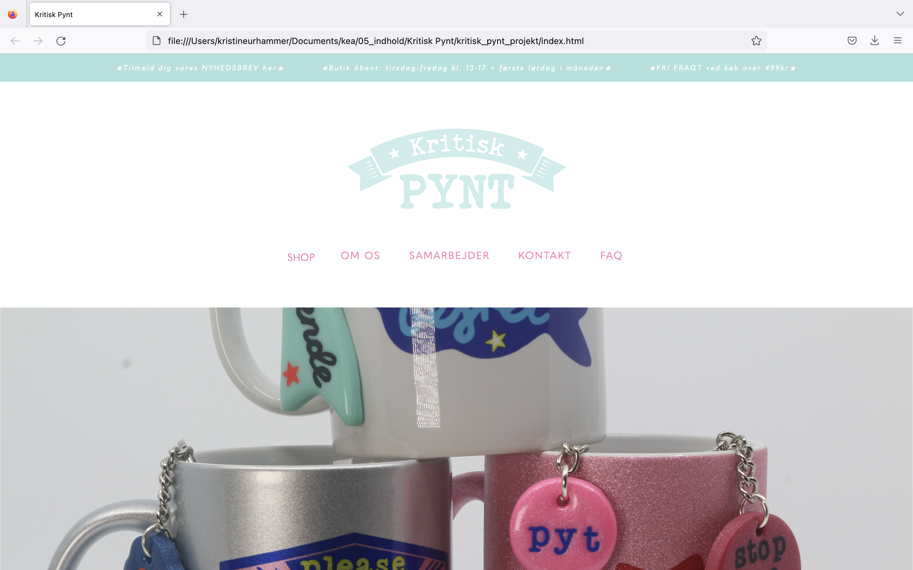

portfolio
portfolio
portfolio
portfolio
01
Introforløbet til MMD uddannelsen. Her lærte vi om grundlæggende indhold for en multimediedesigner, som ex. HTML og CSS i VS Code. Derudover det første kendskab til Adobe pakken. Her et eksempel på en visitkortsøvelse, hvor vi med vores nye basale kodningskompetencer, selv skulle indsætte vores egne oplysninger .


02
Grundlæggende webdesign.
03
UX Design.


04
Animationsforløbet. Her kodede jeg mit spil kaldet "Samhain".
05
Indholdsforløbet. Her arbejdede vi med firmaet Kritisk Pynt.
